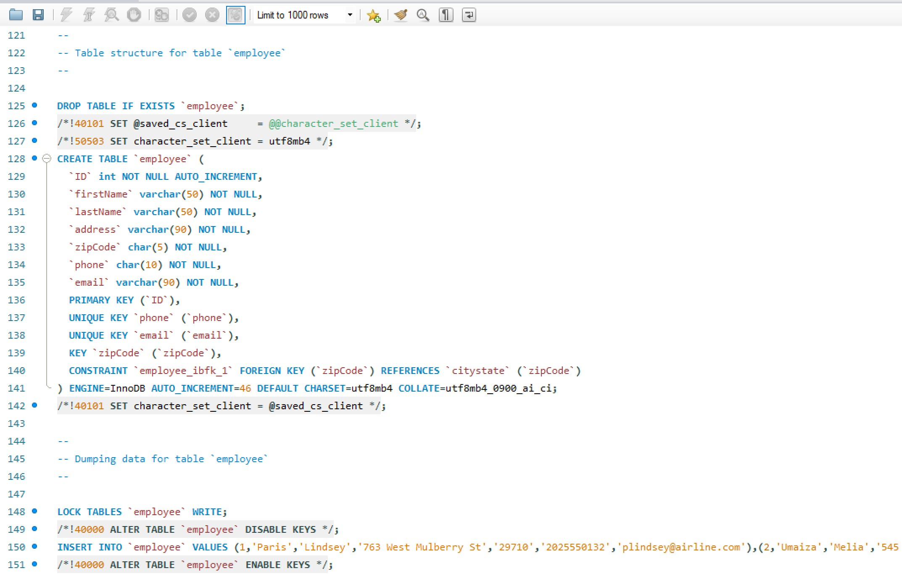

01
Database Schema
Entity relationships and normalized table design.

Featured Project
Designed and implemented a relational airline database using SQL with normalized tables, constraints, and advanced queries.
Project Preview
A relational SQL database built to manage an airline's flights, passengers, aircraft, employees, and bookings.
Entity relationships and normalized table design.

Complex joins, filtering, aggregation, and reporting.
Project Overview
Designed and implemented a relational SQL database for a fictional airline company. The database manages flights, passengers, bookings, aircraft, airports, and employees through well-structured tables connected using primary and foreign keys.
Advanced SQL queries were written to retrieve flight schedules, booking histories, passenger manifests, and other operational information using joins, grouping, aggregate functions, and subqueries while maintaining strong data integrity through constraints.
Development Experience
Designed normalized relational databases with clear relationships between entities.
Created, updated, queried, and maintained data using SQL commands and database best practices.
Built complex joins, subqueries, aggregate functions, and filtering to answer business questions.
Enforced consistency using constraints, indexes, relationships, and proper key design.